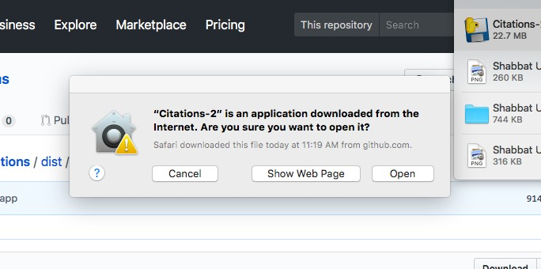

CitationBomb is a tactical and symbolic intervention that seeks to subvert the tyranny of academic metrification.
Download the .zip file to your computer. Double click to open the .zip archive. Once it is unzipped, you should see the “citations.app” application and icon. You should now be able to open the application. See the video below for more details.
Right now CitationBomb runs only on MacOS X 10.11 and above. We are working on a PC compatible version. Running into a bug? Get in touch: citationbombers [at] gmail.com
Instructions
Click “Download” to download the CitationBomb.zip file.
Save the .zip file to the directory of your choosing.
Unzip the .zip file. It should reveal the program along with its icon.
Open the CitationBomb program by double-clicking the “citations” icon.
You might get an alert like this:
If that's the case, do the following:
Go to System Preferences > Security & Privacy
On the General Tab click the little lock in the lower left corner to unlock the general preference pane.
If you are on OS X 10.11, select the Anywhere radio button beneath Allow applications downloaded from.
If you are on OS X 10.12 and above, select the Mac App Store and Identified Developers radio button, and then select, Open Anyway.
Once you've done this, you can control+click or two-finger-click (on trackpad) on the icon, and select “open,” then confirm that you would like to open the application.

The program will likely take a minute or two to open, but you may need to click the icon in your dock if the interface does not appear.
In the form field, enter the title of a paper you have cited in the paper on which you are working.
CitationBomb finds the most “related” papers (per Google Scholar).
CitationBomb then outputs a Word document with these citations in small, white text.
Save this Word document to the directory (folder) of your choice.
The Word document will appear as though it is blank. But, hit command+A to select all the text on the page, and you will see that it contains a series of lines set in 4-point, white type.
Copy these from the Word doc and then return to your paper and paste them at the end of your references section.
When your paper is published, Google will eventually index your paper in Google Scholar. When it does so, I think that the following will happen:
It will include all the citations (including those in white, because it is reading all text on the page, not just what is visible).
The more users do this, the more Google Scholar will become overflowed with citations.
This will make it difficult for the algorithms to make sense of influence or impact.
2018 Zach Kaiser and Culture Industry [dot] Club. Many, many thanks to comrade Gabi Schaffzin for his help on this project.